Regular
400 / UprightДумите имат
характер.
Familiar character.
Bulgarian voice.
Lirena brings Bulgarian Cyrillic to Instrument Serif, preserving its expressive character across Regular and Italic. The aim was to give Bulgarian text the same elegance and distinctive rhythm as the original, while keeping its familiar handwritten forms. The two styles share a common voice, with an upright presence and a flowing italic.
Created by Stiliyan Spasov / Spasov Type, this independent adaptation combines the original Latin forms of Instrument Serif with adapted Cyrillic forms from Cormorant Garamond. Regular’s distinct Cyrillic forms were refined using Instrument Serif’s native strokes and curves. The original Italic adaptation is retained.
Думите имат
характер.
Думите имат
характер.
One phrase, two rhythms. The upright and true italic share an alphabet and vertical metrics, so they can sit together in a composition.
Вдъхновение.
Създаваме
смисъл.
The descending form gives the Bulgarian lowercase letter its familiar handwritten rhythm.
The branching structure makes the contrast between the upright and italic especially clear.
The m-like Bulgarian form adds a softer, more continuous rhythm to words.
Shared proportions keep the two styles together, while the italic has room to move.
Keep the voice.


Cormorant Garamond


Proportions adjusted


Cormorant Garamond


Proportions adjusted


Instrument Serif · m


Latin m → Cyrillic т
Bulgarian forms are the default in both styles. No language setting or alternate feature is needed.
Всяка буква носи собствен ритъм. Заедно буквите създават думи, а думите разказват истории. Формата им е част от начина, по който усещаме написаното.
01—02Place the two WOFF2 files beside your stylesheet, then add this CSS.
@font-face {
font-family: 'Lirena';
src: url('./Lirena-Regular.woff2') format('woff2');
font-weight: 400; font-style: normal;
font-display: swap;
}
@font-face {
font-family: 'Lirena';
src: url('./Lirena-Italic.woff2') format('woff2');
font-weight: 400; font-style: italic;
font-display: swap;
}
.specimen {
font-family: 'Lirena', serif;
font-weight: 400;
font-synthesis: none;
}Use font-style: italic for the Italic variant.
Refined Lirena Regular and original Italic, ready for desktop and web.
Released under SIL Open Font License 1.1.
Both original source licenses are included.
Instrument Serif Project Authors
Cormorant Project Authors
Original Latin outlines and source Cyrillic forms.
Distributed under the original SIL Open Font License 1.1. Instrument license · Cormorant license